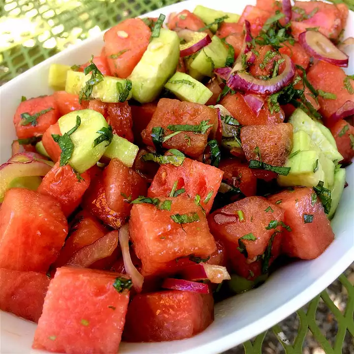

Refreshing Watermelon Salad

Description
Watermelon salad is the quintessential summer food!
Cucumber, watermelon, lime juice, and crumbled
feta cheese delight the palette with interesting flavors
that balance each other out. Red onion adds some spice, crunch, and color.
An overall beautiful salad!
Ingredients
- 3 tablespoons lime juice
- 1 cup sliced red onion, cut lengthwise
- 15 cups cubed watermelon
- 3 cups cubed English cucumber
- 1 (8 ounce) package feta cheese, crumbled
- 1/2 cup chopped fresh cilantro
- cracked black pepper
- sea salt
Directions
- In a small bowl, pour lime juice over red onions.
Allow to marinate while assembling the salad.
- Gently combine the watermelon, cucumber, feta cheese,
and cilantro in a large bowl. Season with black pepper.
Toss watermelon salad with marinated onions and season
with sea salt just before serving.
Nutrition Facts
Per Serving:287 calories; protein 24.7g;
carbohydrates 27.9g; fat 3.7g; cholesterol 47.2mg; sodium 1612.5mg.